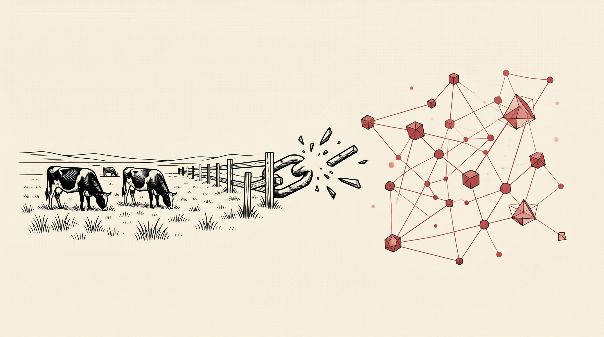

理论溯源
原始牧场模型
HARDIN · 1968
竞争性 × 非排他性资源，驱动理性个体走向集体非理性的过度使用。
- 每个牧民增加牲畜的边际收益归己
- 边际成本由全体牧民分摊
- 理性选择导致公共资源枯竭

从牧场到代码仓库：公地悲剧的跨时代映射
数字新命题
"提供悲剧"
WEBER · DIGITAL COMMONS
数字公地的零边际复制成本，使危机从"过度使用"转向"无人创建"的生产端。
- 代码库初始创建成本高昂
- 搭便车者无激励贡献初始投入
- 维护缺口成为开源的核心瓶颈